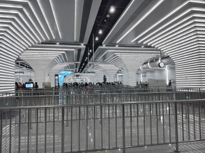
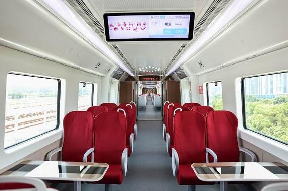

目录
♿ 基础便民与无障碍设施
全线车站均配备了完善的无障碍及便民设施，方便不同人群出行：
-
无障碍设施：全线车站均设有无障碍电梯，出入口、通道、站厅和楼梯均设置盲道。无障碍卫生间采用电动门，方便乘客进出。
-
母婴室：全线车站配有母婴室，内设婴儿护理台。
-
便民服务箱：统一设置了“域见·便利站”便民服务箱，提供日常应急物品。
-
爱心预约：支持通过服务热线或微信公众号预约爱心出行帮扶，工作人员会提供协助。

🦀 特色场景服务（看海与海鲜）
结合12号线直达象山、海鲜消费旺盛的特点，部分车站提供了针对性服务：
-
“域见·烟火”打包台：在毗邻菜市场的车站（方便乘客买海鲜），设置了专门的打包台，免费提供海鲜防水袋、胶带、剪刀等工具，解决乘客携带海鲜容易漏水、有异味的烦恼。
-
“菜篮子”绿色通道：部分站点为农户开通了绿色通道，有专人协助快速安检与搬运，方便携带农副产品乘车。
🚆 车厢内设施
列车内部设计更接近高铁，注重长距离乘坐的舒适性：
-
座椅布局：采用横向排列（垂直于车窗），部分座位配有小桌板，材质为软包织物，乘坐体验比普通地铁更舒适。
-
扶手设计：车门区域取消了立柱扶手，但在进门位置的环形杆下方设有多个扶手，兼顾了站立乘客的抓握需求。
